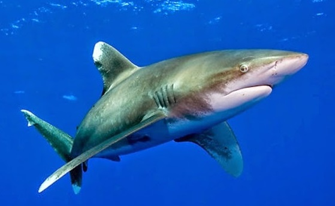

-Ikan hiu kehilangan gigi lebih dari 6000buah setiap tahun, dan gigi barunya tumbuh dalam waktu 24 jam.
-Semut dapat mengangkat Beban 50 kali tubuhnya.
-Mulut menghasilkan 1 liter ludah setiap hari.

-Mengunyah permen karet saat mengupas Bawang mencegah kita menangis
-siput bisa tidur hingga 3 tahun

-Memakai Headphone selama 1 jam dapat mengembangbiakan bakteri dalam kuping 700 kali lebih cepat.

-Mengunyah permen karet saat mengupas Bawang mencegah kita menangis
-siput bisa tidur hingga 3 tahun
-Memakai Headphone selama 1 jam dapat mengembangbiakan bakteri dalam kuping 700 kali lebih cepat.